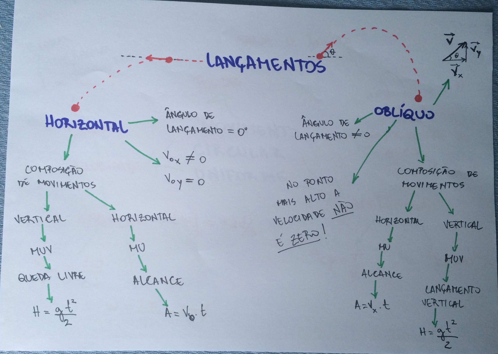

Exercícios
Agora que estamos totalmente preparados,
🤏😎
🤏🕶️😳
Vamos nos exercitar!
Caso tenha esquecido algo, deixei um mapa mental logo abaixo para refrescar sua memória.
Imagem retirada daqui.
Exercício Lançamento Horizontal:
1.Uma bola rolou para fora de uma mesa de 80cm de altura e avançou horizontalmente, desde o instante em que abandonou a mesa até o instante em que atingiu o chão a 80cm do pé da mesa. Considerando g=10m/s², a velocidade da bola, ao abandonar a mesa, era de:
a) 8,0m/s
b) 5,0m/s
c) 4,0m/s
d) 2,0m/s
e) 1,0m/s
Ver solução
Exercício Lançamento Oblíquo:
2.Um corpo é lançado de um ponto O do solo com velocidade inicial V₀, que forma com a horizontal um ângulo Θ, tal que cosΘ=0,80 e senΘ=0,60. Sendo V₀=100 m/s e g=10 m/s², despreze a resistência do ar e determine:
a) o instante em que o corpo atinge o ponto mais alto da trajetória;
b) o instante em que o corpo volta ao solo;
c) o alcance horizontal A;
d) a altura máxima H;
e) a velocidade escalar do corpo no ponto de altura máxima;
Ver solução
Soluções
1. letra d
Dados:
80cm=0,8m
H=0,8m
A=0,8m
G=10m/s²
Ao abandonar a mesa V₀y=0m/s, logo V₀=Vx.
Considerando o eixo Y crescendo para baixo:
Aplicando a fórmula H=GT²/2
T=0,4s
E depois A=VxT
Vx=2m/s
V₀=2m/s
2.a) T=6s
Dados:
cosΘ=0,8
senΘ=0,6
V₀=100m/s
G=10m/s²
De acordo com V₀y=V₀senΘ, V₀y=60m/s
Aplicando a fórmula Vy=V₀y-GT
Como em H Vy=0m/s
T=6s
b) Tf=12s
Como já temos o tempo na metade do caminho (T=6s), precisamos apenas multiplicá-lo por 2 para se obter o tempo final(Tf).
Tf=12s
c) A=960m
Por meio de Vx=V₀cosΘ, temos que Vx=80m/s
Aplicando a fórmula A=VxT
A=960m
d) H=180m
Aplicando a fórmula Vy²=V₀y²-2GH
H=180m
e) V=80m/s
Como em H Vy=0m/s, a velocidade escalar do corpo nesse instante é igual a Vx.
V=80m/s
-
Créditos: - Mapa mental MRU
- Mapa mental MRUV
| Lançamento Horizontal | Lançamento Oblíquo | Vetores | |
|---|---|---|---|
| MRU | A=VxT | A=VxT | - |
| MRUV | Vy²=-2GH | Vy²=V₀y²-2GH | - |
| Vy=-GT | Vy=V₀y-GT | - | |
| H=H₀-(GT²)/2 | H=V₀yT-(GT²)/2 | - | |
| Soma | - | - | Vs²=A²+B²+2ABcosΘ |
| Decomposição | - | - | Vy=VsenΘ |
| - | - | Vx=V₀cosΘ |